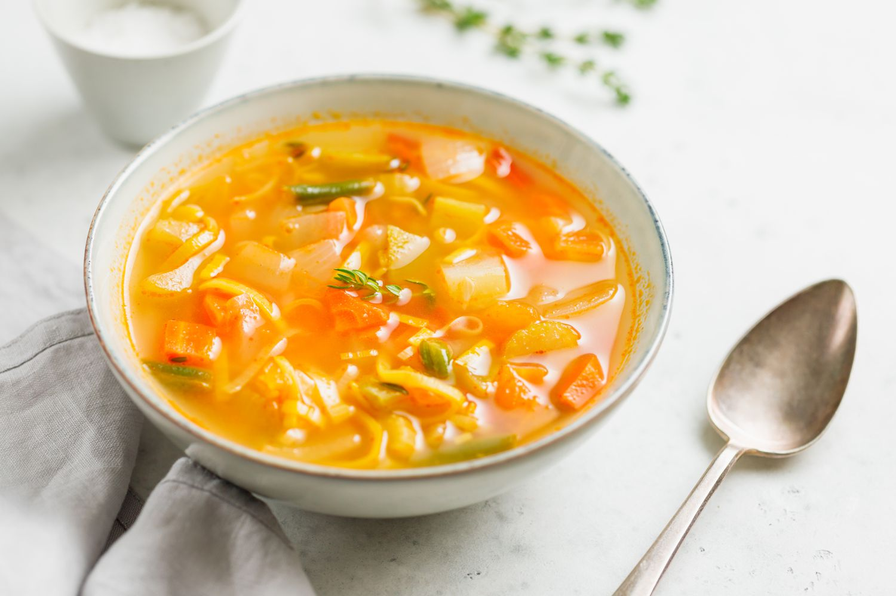

Soup Recipe
Back home

Soup is a primarily liquid food, generally served warm or hot that is made by combining ingredients of meat or vegetables with stock, milk, or water.
Ingredients
- 1 tbsp vegtable oil
- 1onion chopped
- 1 tsp ground coriander
- 1 potatoe chopped
- 450g carrots, peeled and chopped
- 2 x 400g tins chopped tomatoes
- 1.2l vegetable or chicken stock
- handful of coriander (about half a supermarket packet)
Method
- Heat 1 tbsp vegetable oil in a large pan, add 1 chopped onion, then fry for 5 mins until softened.
- Stir in 1 tsp ground coriander and 1 chopped potato, then cook for 1 min.
- Add the 450g peeled and chopped carrots and 1.2l vegetable or chicken stock, bring to the boil, then reduce the heat.
- Cover and cook for 20 mins until the carrots are tender.
- Tip into a food processor with a handful of coriander then blitz until smooth (you may need to do this in two batches). Return to pan, taste, add salt if necessary, then reheat to serve.